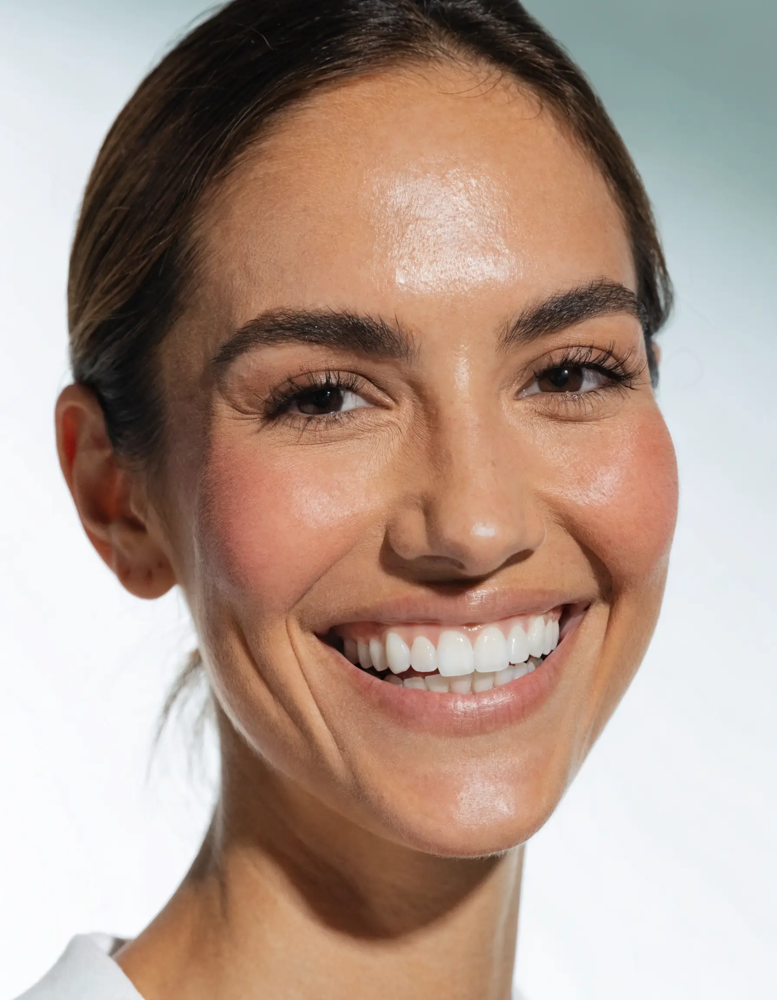
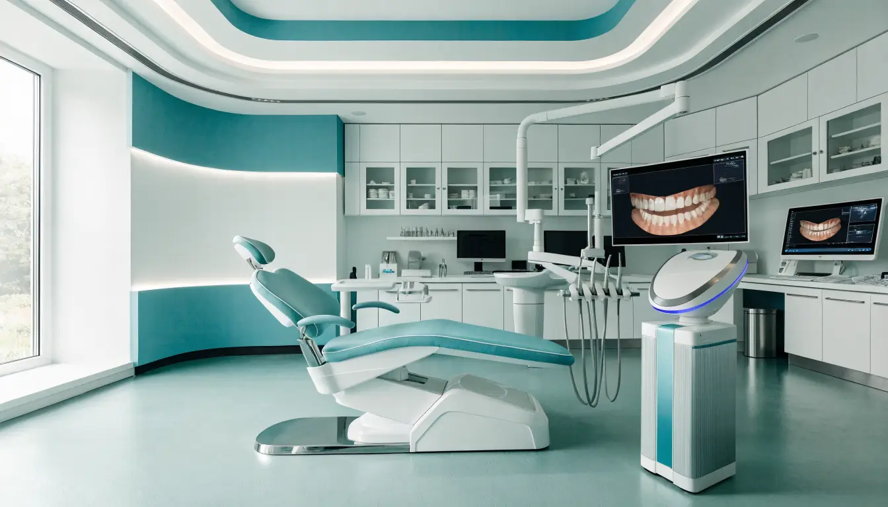
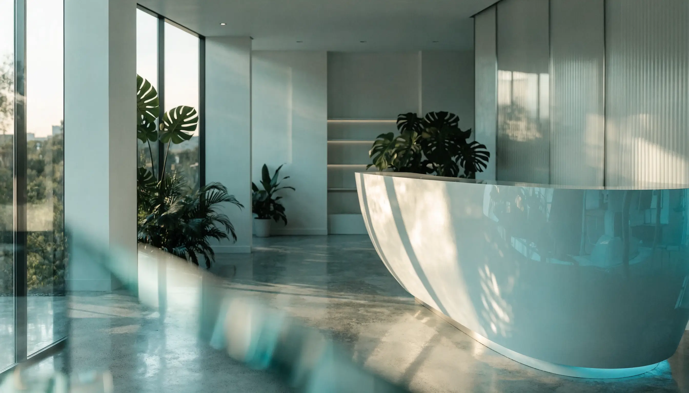

Ortodoncia
Brackets y ortodoncia con micro-implantes para alinear tu mordida con precisión y en menos tiempo.
Odontología integral y especialidades en el sur de Mérida. Diagnóstico de precisión con escáner 3D, trato cercano y precios accesibles. Más de 5 años cuidando sonrisas en la colonia Dolores Otero.

Atención odontológica integral con especialidades coordinadas. Un diagnóstico, un plan de tratamiento claro y un equipo que te acompaña en cada etapa.
Brackets y ortodoncia con micro-implantes para alinear tu mordida con precisión y en menos tiempo.
Planificación digital de implantes para recuperar piezas perdidas con resultados naturales y duraderos.
Blanqueamiento profesional no invasivo, sin sensibilidad y con resultados visibles desde la primera sesión.
Tratamiento de conductos (nervio) para salvar tu diente y eliminar el dolor de forma definitiva.
Coronas y carillas de zirconia fabricadas a medida: máxima estética y resistencia para tu sonrisa.
Resinas y empastes del color de tu diente para restaurar caries y pequeñas fracturas de forma invisible.
Atención dental especializada y amable para los más pequeños, en un ambiente de confianza.
Profilaxis, limpieza profunda y tratamiento de encías para mantener una boca sana a largo plazo.
Extracciones simples y complejas, muelas del juicio y valoración de lesiones orales con seguridad.
Atendemos emergencias dentales —dolor agudo, abscesos, golpes y fracturas— con disponibilidad incluso los domingos bajo cita previa.

Invertimos en tecnología para que veas lo que nosotros vemos y entiendas tu tratamiento desde el primer día.

Cirujana Dentista · Cédula Profesional 12529314
Egresada de la Universidad Autónoma de Yucatán, la Dra. Cecilia dirige Dentaly con un enfoque integral y humano. Cuenta con diplomados en cirugía oral y maxilofacial, endodoncia, ortodoncia y odontopediatría, coordinando cada especialidad para darte un tratamiento completo bajo un mismo techo.
Te mostramos tu boca en 3D y te explicamos cada paso. Sin tecnicismos, sin sorpresas.
Ortodoncia, implantes, endodoncia y más, en un mismo lugar y bajo un mismo plan.
Consulta inicial de $350 con escaneo 3D incluido. Cotizaciones transparentes antes de iniciar.
Abrimos hasta las 9:30 PM entre semana y sábados, para que tu cita no choque con tu trabajo.
Pacientes reales de Mérida que confiaron su sonrisa a Dentaly.
“Excelente atención y muy profesionales. Me explicaron todo con el escáner y el trato fue muy cálido. La mejor clínica del sur de Mérida.”
“Llegué por una urgencia un fin de semana y me atendieron de inmediato. Sin dolor y a un precio justo. 100% recomendados.”
“Llevé a mi hija y la trataron increíble. Perdió el miedo al dentista. La Dra. Cecilia es muy paciente y dedicada.”
Elige tu tratamiento, día y horario. Confirmamos al instante por WhatsApp. Sin llamadas ni esperas.
La valoración inicial cuesta $350 MXN e incluye escaneo intraoral 3D y radiografías digitales. Con eso te entregamos un diagnóstico y un plan de tratamiento claro.
Sí. Atendemos urgencias dentales —dolor, fracturas, inflamación o abscesos— con disponibilidad incluso los domingos bajo cita previa. Escríbenos por WhatsApp y te damos prioridad.
Te damos una cotización transparente antes de iniciar cualquier tratamiento y opciones de pago según el plan. Pregúntanos al agendar.
En Calle 50 #657H x 95 y 97, Col. Dolores Otero, en el sur de Mérida (C.P. 97270). Tenemos fácil acceso y puedes ver la ruta en el mapa de esta página.
Claro. Contamos con odontopediatría: atención especializada y amable para que los más pequeños vivan una experiencia tranquila y sin miedo.
Agenda hoy en Dentaly y descubre por qué somos de las clínicas mejor calificadas de Mérida.